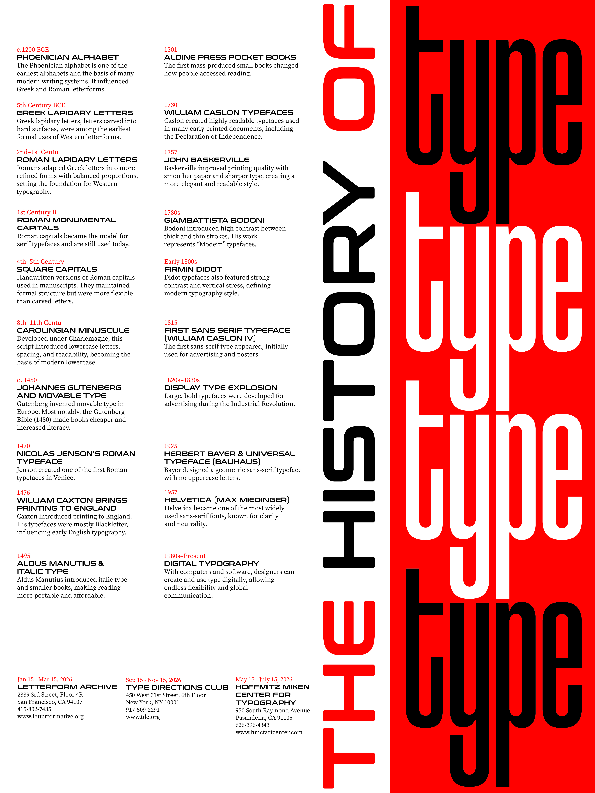

Eurostile was designed by Italian type designer Aldo Novarese in 1962. It was based on an earlier typeface called Microgramma, which was created in the 1950s.
Microgramma only included capital letters. Novarese added lowercase letters and more styles, making Eurostile easier to use in posters, books, logos, and advertising. Its square shapes gave it a modern and futuristic look.
